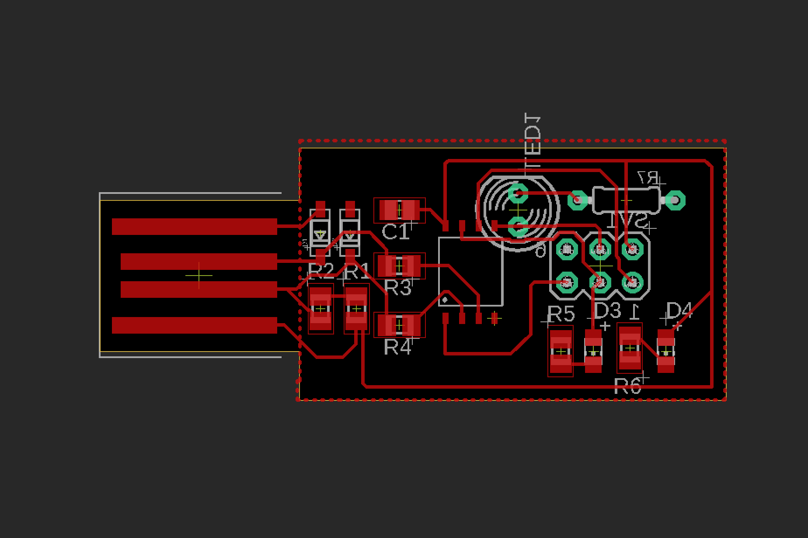
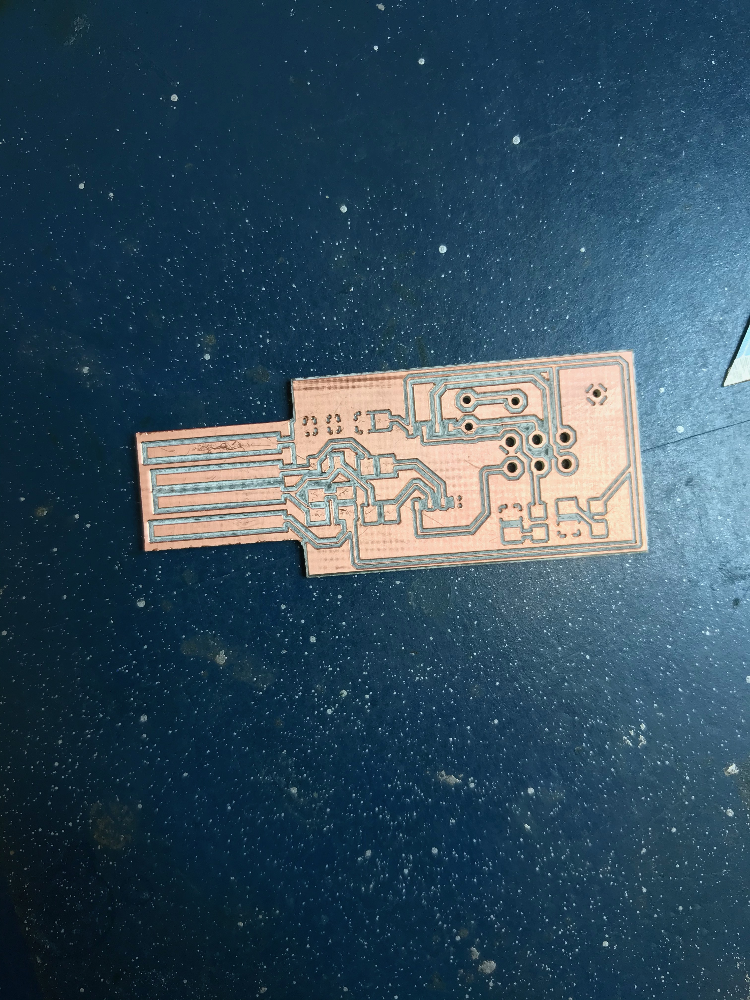
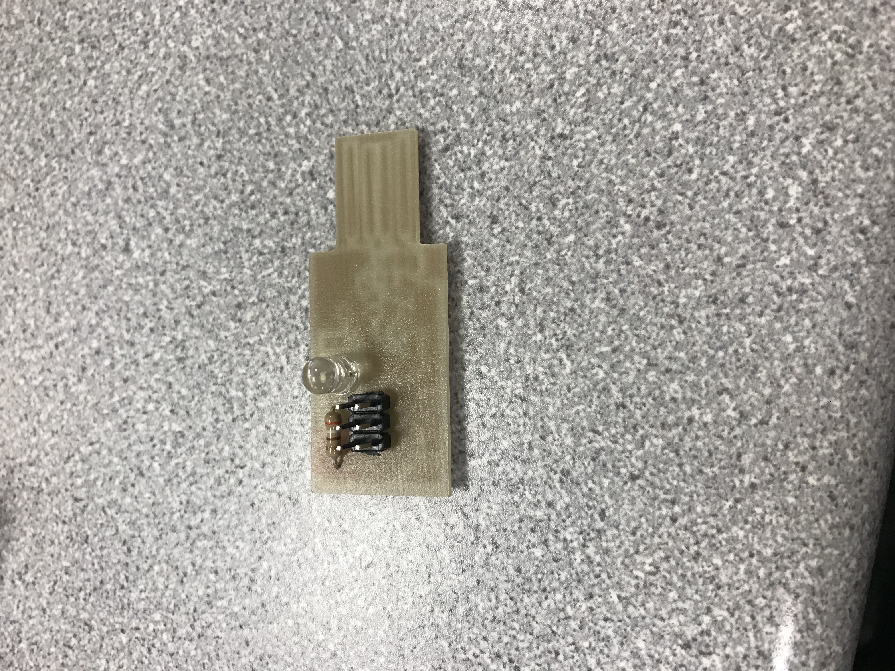

The Beginnings
This was my first time working with any kind of circuit board, printed or otherwise. I took Jennifer's circuit schematic and design and followed it pretty closely, as I knew it would work and I didn't think it would cause me any problems.

Printing
I got my board printed pretty quickly, and by Wednesday I started working on it to get rid of any bridged grounds that resulted because of the lack of precision with the printer. It took a while and there was one time that I had to get some fresh eyes on it because I couldn't see what I was missing. By the end of the day on Wednesday all my bridged grounds were taken care of and I soldered my ATtiny85 to the board.

Soldering
Soldering went fairly quickly for me. I was able to get all the diodes, LEDs, capacitors, resistors, and the header soldered onto my board in the lab hour on Thursday. Nothing especially dramatic happened, but the little parts were very little and I did have to take some off and wick some solder at various points. Also, I didn't test for bridged grounds along the way, which was pretty bold of me. However, when I did check everything with the multimeter at the end of the day, it all was fine and nothing was in the wrong spot.
Major Problems
Friday is when I ran into the most problems. I arrived ready to program my board with the code that would make it run, but when we plugged it into the Arduino it wasn't working the way that it was supposed to. All the lights turned on, which indicated to us that there was a problem. We assumed it was the ATtiny85, so I clipped it off, removed the solder from the board, and resoldered a new ATtiny85 to the board. We plugged it in again, but I accidentally soldered it the wrong way up and it blew out the ATtiny85. By this point I had been struggling with this board for an hour and a half and I was pretty defeated, especially since no one else had gotten their board to work since there were many problems between Arduinos and code. So I called it a day and might revisit this project again sometime when other people can get their boards to work.
